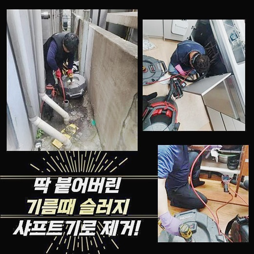
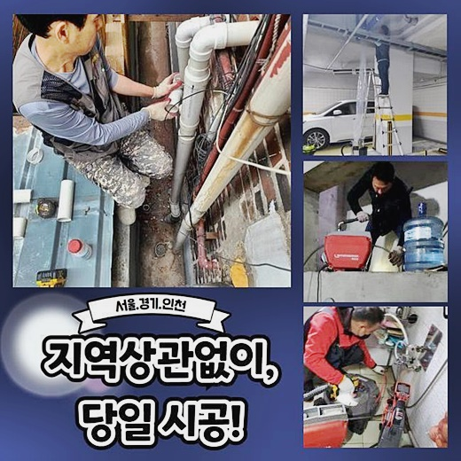
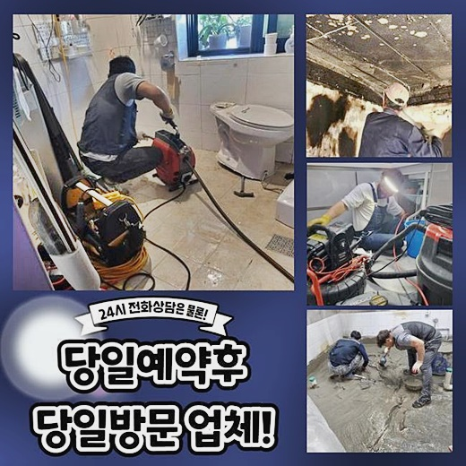
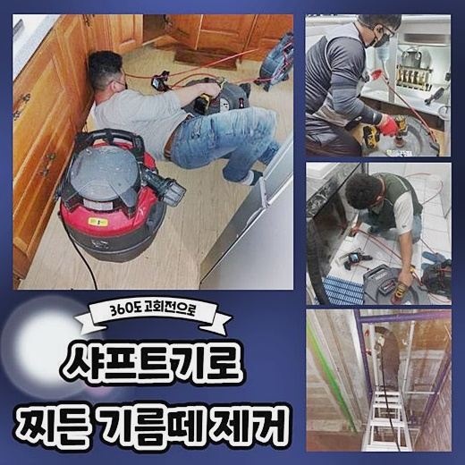
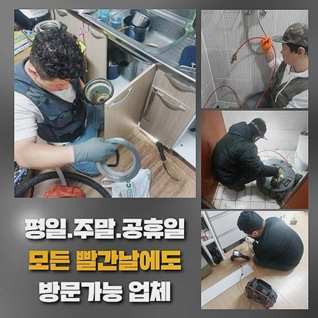

🏠 강남 압구정동화장실막힘 일원동 하수구청소장비 통수전문
용인 원동 하수구막힘 전문 시공 후기

📋 작업 개요
- 위치: 용인 원동, 원동, 용인
- 서비스 유형: 하수구막힘, 배관막힘, 역류해결, 뚫는업체, 배관청소, 고압세척
- 작업 일시: 2024. 9. 25. 10:11
- 업체명: 하수구수사대 (010-5615-2118)
🔍 문제 상황
강남 압구정동화장실막힘 일원동 하수구청소장비 통수전문
배수관에서 올라오는 냄새의 경우 생활 속에서 겪게되는 불편사항이에요
냄새들의 원인들론 배수관의 막힘으로 볼 수 있어요 구간마다 슬러지들이 들러붙어 배수를 방해하기에 이르고 마침내 흡착된 이물질이 굳으면서 생겨난 것입니다
냄새들을 없애기위해선 누적된 까닭에 산패된 잔여물질들을 말끔하게 없애주어야 하겠습니다
하지만 일상 중에 해당 문제들의 사실들을 모르셔서 다양한 방책을 실시하지만 악취를 시정해낼 수 없는 현장이 대다수에요
전문가용 장비와 함께 노하우가 부족할 시 증세들이 발발한 시점에 올바른 방법을 쓰지않으면 배수관이 균열될 가능성이 현저하여 되레 사태가 심각해질지 모릅니다
그런 까닭에 오류들이 발생되었다면 전문성을 갖춘 도움들을 받는게 합리적입니다
방문드렸던 장소는 세탁실에 자리한 배수관의 결함으로 난감함을 겪고 계셨었는데요

🔎 원인 분석
💡 전문가 진단: 정밀 진단 장비를 사용하여 슬러지의 고착 여부를 판명하고 타격/세척 작업을 실시했습니다.
이 위치의 배수관은 메인관로들과 다양한 관로로 접촉한 상태였는데 의뢰자께서 안내해주신 건 구간마다의 배수구들이 역류하여 문의를 했다고 하셨어요
고객께서 설명을 들어보니 배수구와 바닥 배수구들이 이어진 곳에서 증상들이 발생한걸로 판단했어요
공용관로의 일정 위치에 증상이 발생하면서 거주공간에서도 고충이 야기된걸로 판단되었죠
배수될 때 조금 떨어진 바닥 배관에서 역류하게되는 상황들로서 빠르게 방문드려 곧장 세척을 해봐야 했어요
그러나 배수구엔 이물질들이 많았기에 세척이 힘들었어요
1차적으로 석션기기를 써서 넘친 하수들을 제거시키고 내측으로 조심스럽게 진단해봐야 하는데요
석션도구를 쓰면 오수와 덧붙여 잔해들도 사라져서 작업들이 문제없이 이뤄지죠
내시경장치로 점검하니 가정과 이어진 관로에는 문제라던가 막힐만한 요소는 목격되지 않았고 메인관으로 흘러가는 부분에서 잔해가 침전된 형태를 목격했어요
잔여물질은 흐름들을 방해하는 수준으로 단단함을 유지했고 악취들의 주범이였죠

🔧 작업 과정
고착물을 제거시키기위해선 하수관의 기름성분을 타격하는 샤프트기기를 이용하여야 되며, 그리고 오염된 부분을 중심으로 세정해 통수오류를 복구하고 냄새도 없어지게 해주었습니다
일상 중 사용 중인 배수관은 공용관로로 하수들이 한데 모여 처리장까지 운반이 되죠
보통 이물질들은 엘보라인과 같은 부위에 축적될 수 밖에 없는 구조인데요
그래서 공용관로는 때에 맞춰 점검을 실시하는게 중요한데요
여기저기로 번지게되는 사태를 막으려면 메인배관 근처에까지 세척추후 과정이 행해져야하는데요
청소하는 도중에 탈락된 이물들을 석션장치를 써서 적합하게 흡입해야 세척이 순항을 달리게되고 내시경을 통해 검수하고자 하는 시점에도 잔해의 파악들이 제대로 이뤄지므로 적당한 때에 이러한 과정은 필수적입니다
흡착물들이 단단해짐과 동시에 배수관에 자리했을 땐 굳은 이물들을 작게 하는것이 중요하겠습니다
샤프트기를 이용하여 문제되는 구간을 뚫고난 다음엔 세척이 완벽히 행해졌는지 체크해보기 위하여 하수구 내시경장비로 검수를 진행시킵니다
이때에도 의뢰인분도 직관적으로 확인가능하고 컨디션이 회복된 하수관을 확실히 살펴볼 수 있습니다
작업 내용을 고객분께 안내하고 작업들을 진행하니 고객분도 안심하실 수 있습니다
우리집 배수관이 어째서 막힌건지 어떤 방식으로 조치하면 안정적인것인지 고객이 선명하게 알고 계시면 관리 시점에도 도움되는 것은 사실입니다
세척이 끝나면 한꺼번에 쏟아서 하수관으로 배출되는지 테스트과정을 이행해요
이전과같이 물들이 솟아오르거나 정체없이 물들이 배출되는것을 보았습니다
고객께서 깔끔한 배관들을 유지하고 관리측면에 도움되는 내용들을 말씀드린 뒤 종료에 이르렀습니다


✅ 작업 완료
해결에 관해 고민이 될 때 저희전문진에게 전화주시면 신속히 내방드려 진단해드릴게요
현장의 상태들에 적합하도록 대응책들을 지원해 편하게 이용하실 수 있도록 조치합니다
통수 불능으로 불편들을 감수해야 될 때는 부담없이 저희업체에게 연락 주세요
문제의 가정이 쾌적하며 편히 이용되도록 저희들이 발 벗고 나설게요


⚠️ 하수구 배관 막힘 예방 및 관리 가이드
- ✅ 머리카락, 비닐, 물티슈 등 물에 분해되지 않는 이물질은 하수구 유입을 절대 금지해 주세요.
- ✅ 하수구 거름망을 씌우고 모여진 이물질은 주기적으로 쓰레기통에 바로 비워주셔야 합니다.
- ✅ 배관 노후가 심할 경우 이물질이 더 쉽게 걸리므로 주기적인 배관 세척(고압세척 등)을 권장합니다.
- ✅ 작업 후 1년 이내 재발 시 하수구수사대에서 무상 A/S 보증 서비스를 제공합니다.
💡 핵심 정리
- 확실한 장비 작업(내시경 점검 및 샤프트 스케일링)으로 원인을 뿌리 뽑습니다.
- 작업 후 1년 이내에 동일한 부위 재발 시 100% 무상 A/S 서비스를 보장합니다.
- 서울 · 경기 · 인천 전 지역에 24시간 언제든 긴급 출동할 수 있도록 항시 대기 중입니다.
❓ 자주 묻는 질문 (FAQ)
🚨 용인 원동 하수구막힘 문제로 고민이신가요?
정확한 원인 진단과 확실한 시공으로 재발 없는 해결을 약속드립니다.
24시간 긴급 출동 | 서울 · 경기 · 인천 전지역 | 1년 내 재발 시 무상 A/S